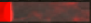

import random
import SwordAndMagicPictures
reload(SwordAndMagicPictures) # make sure global variables are reloaded
import ControlLib
from SwordAndMagicPictures import *
from ControlLib import *
import SwordAndMagicActions
from SwordAndMagicActions import *
reload(SwordAndMagicActions)
#bufferImages = "bufferRegion.png"
bufferRegion = Region(145,155,466,40)
imageNoHp = Pattern().similar(0.74)
imageHp50p = Pattern().similar(0.61)
imageHp50Region = Region(149,56,287,26)
# store image and its offset
class BufferStatus():
image = 0
name = ""
useSkillSteps = []
def __init__(self, name, image, useSkillSteps = []):
self.image = image
self.name = unicode(name, "utf8")
self.useSkillSteps = useSkillSteps
BufferList = [
#BufferStatus("精靈餅乾", "1513000438389.png", [Pattern("1513012091917.png").similar(0.95), Pattern("1513012115279.png").similar(0.95), Pattern("1513012153809.png").similar(0.95), "1513012783396.png", "1513012843741.png"]),
#BufferStatus("食物", Pattern("1513000766333.png").similar(0.59), [Pattern("1513012091917.png").similar(0.95), Pattern("1513012115279.png").similar(0.95), "1513053707716.png", "1513053720833.png" , "1513012843741.png"]),
#BufferStatus("保護罩", Pattern("1513000826312.png").similar(0.67), ["1513012904938.png", "1513012930638.png", "1513012940942.png", "1513012843741.png"]),
#BufferStatus("鎧甲護持", Pattern("1513000907139.png").similar(0.69), ["1513012904938.png","1513013125930.png","1513013138966.png", "1513012843741.png"]),
#BufferStatus("負重強化", Pattern("1513000932286.png").similar(0.65), ["1513012904938.png","1513013030782.png","1513013041431.png", "1513012843741.png"]),
#BufferStatus("變身", Pattern("1513001027215.png").similar(0.68)),
#BufferStatus("強化戰鬥卷軸", Pattern("1513001000565.png").similar(0.59)),
#BufferStatus("自我加速藥水", Pattern("1513004774208.png").similar(0.72), [Pattern("1513012091917.png").similar(0.95), Pattern("1513012115279.png").similar(0.95), "1513033719938.png", "1513033735138.png", "1513012843741.png"]),
]
def checkBufferStatus():
lib = GaeeryLib()
lib.setROI(Region(1303,49,502,710))
for buffer in BufferList:
if not bufferRegion.exists(buffer.image, 0):
Debug.user( "no buffer %s" % buffer.name )
for step in buffer.useSkillSteps:
lib.clickImage( "use skill step", step)
sleep(0.5)
def doImageSteps( steps ):
lib = GaeeryLib()
i = 0
for step in steps:
lib.clickImage( "use image step " + str(i), step)
i = i + 1
sleep(0.5)
def doPositionSteps( steps ):
i = 0
for step in steps:
Debug.user( "click position step " + str(i) )
click(step)
i = i + 1
sleep(0.5)
nBackHomeCount = 0
def checkHp():
global nBackHomeCount
if imageHp50Region.exists(imageNoHp, 0):
Debug.user("Hp is lower than 70")
click(pHpWater)
nBackHomeCount = 0
elif imageHp50Region.exists(imageHp50p, 0):
Debug.user("Hp is lower than 50")
click(pHpWater)
nBackHomeCount = nBackHomeCount + 1
if nBackHomeCount > 5:
click(Location(1736, 915))
exit
else:
Debug.user("Hp is OK")
regionParty = Region(53,337,75,319)
regionHp = Region(140,370,161,40)
imageHp90 = Pattern( ).similar(0.90)
imageHp65 = Pattern(
).similar(0.90)
imageHp65 = Pattern( ).similar(0.85)
imageHp40 = Pattern(
).similar(0.85)
imageHp40 = Pattern( ).similar(0.85)
imageMp90 = Pattern(
).similar(0.85)
imageMp90 = Pattern( ).similar(0.85)
imageMp50 = Pattern(
).similar(0.85)
imageMp50 = Pattern( ).similar(0.85)
imageMp10 = Pattern().similar(0.80)
imageParty =
).similar(0.85)
imageMp10 = Pattern().similar(0.80)
imageParty =  pRecoverHp = Location(921, 921)
pRecoverMp = Location(1037, 916)
pParty = Location(228, 270)
pHpWater = Location(808, 921)
pGoToTown = Location(1160, 916)
def checkHp2():
global nBackHomeCount
if not regionParty.exists(imageParty, 1):
Debug.user("Change to party page")
click(pParty)
return
if regionHp.exists(imageHp90, 0.3):
nBackHomeCount = 0
if not regionHp.exists(imageMp90, 0):
Debug.user("Hp is OK")
recoverMp()
else:
Debug.user("Hp & Mp are OK")
elif regionHp.exists(imageHp65, 0.3):
Debug.user("Hp is 65~90")
#click(pHpWater)
if regionHp.exists(imageMp10, 0.3):
Debug.user("has mp")
recoverHp()
sleep(1)
else:
Debug.user("no mp")
recoverMp()
sleep(1)
nBackHomeCount = 0
elif regionHp.exists(imageHp40, 0.5):
Debug.user("Hp is 40~65")
drinkWater()
if regionHp.exists(imageMp10, 0.3):
Debug.user("has mp")
recoverHp()
sleep(1)
else:
Debug.user("no mp")
recoverMp()
sleep(1)
nBackHomeCount = 0
else:
Debug.user("Hp is lower than 40")
drinkWater()
nBackHomeCount = nBackHomeCount + 1
if nBackHomeCount < 2:
return
Debug.user("return to town!!")
screenCapture(
pRecoverHp = Location(921, 921)
pRecoverMp = Location(1037, 916)
pParty = Location(228, 270)
pHpWater = Location(808, 921)
pGoToTown = Location(1160, 916)
def checkHp2():
global nBackHomeCount
if not regionParty.exists(imageParty, 1):
Debug.user("Change to party page")
click(pParty)
return
if regionHp.exists(imageHp90, 0.3):
nBackHomeCount = 0
if not regionHp.exists(imageMp90, 0):
Debug.user("Hp is OK")
recoverMp()
else:
Debug.user("Hp & Mp are OK")
elif regionHp.exists(imageHp65, 0.3):
Debug.user("Hp is 65~90")
#click(pHpWater)
if regionHp.exists(imageMp10, 0.3):
Debug.user("has mp")
recoverHp()
sleep(1)
else:
Debug.user("no mp")
recoverMp()
sleep(1)
nBackHomeCount = 0
elif regionHp.exists(imageHp40, 0.5):
Debug.user("Hp is 40~65")
drinkWater()
if regionHp.exists(imageMp10, 0.3):
Debug.user("has mp")
recoverHp()
sleep(1)
else:
Debug.user("no mp")
recoverMp()
sleep(1)
nBackHomeCount = 0
else:
Debug.user("Hp is lower than 40")
drinkWater()
nBackHomeCount = nBackHomeCount + 1
if nBackHomeCount < 2:
return
Debug.user("return to town!!")
screenCapture( )
click(pGoToTown)
exit(1)
def recoverMp():
Debug.user("MP recover skill")
type(Key.F3)
def recoverHp():
Debug.user("HP recover skill")
type(Key.F2)
def drinkWater():
Debug.user("Drink water!")
type(Key.F1)
def useSelfRecoverBackupassssssssssssssssssssssssssssssssssssssssssssssssssssssssssssss():
lib = GaeeryLib()
lib.setROI(Region(751,869,1038,104))
imageSelfRecover = Pattern(
)
click(pGoToTown)
exit(1)
def recoverMp():
Debug.user("MP recover skill")
type(Key.F3)
def recoverHp():
Debug.user("HP recover skill")
type(Key.F2)
def drinkWater():
Debug.user("Drink water!")
type(Key.F1)
def useSelfRecoverBackupassssssssssssssssssssssssssssssssssssssssssssssssssssssssssssss():
lib = GaeeryLib()
lib.setROI(Region(751,869,1038,104))
imageSelfRecover = Pattern( ).similar(0.95)
imageRecover =
).similar(0.95)
imageRecover =  skill = lib.find( "find self recover skill", imageSelfRecover )
if skill == None:
click(pRecoverHp)
sleep(0.5)
lib.clickImage( "use skill to rescue self", imageSelfRecover)
while True:
#checkBufferStatus()
checkHp2()
sleep(0.3)
skill = lib.find( "find self recover skill", imageSelfRecover )
if skill == None:
click(pRecoverHp)
sleep(0.5)
lib.clickImage( "use skill to rescue self", imageSelfRecover)
while True:
#checkBufferStatus()
checkHp2()
sleep(0.3)